Känslor som signaler på förändring
Exempel från praktiken
När samhället förändras behöver vi ta ansvar

När ekonomikommentatorn Andreas Cervenka i en krönika i Aftonbladet frågade varför unga inte var argare över de kriser som drabbat dem – svarade studenten Stella Arenius, 22. Hon höll inte med.
"Att läget är illa, det sätter Cervenka själv huvudet på spiken på. Det han däremot har fått totalt om bakfoten är unga människors respons på dessa kriser. Han menar på att vi borde vara argare, men det han inte ser är att det vi alla går runt och bär på, likt blytunga ok på våra axlar, är sorg. Jag tycker dessutom att vi är ganska arga, men att det inte har löst särskilt mycket.”
Stella tillhör Generation Z – de födda mellan 1995 och 2010 - en generation som aldrig upplevt en tid utan kris. Flyktingkrisen. Klimatkrisen. Trump. Pandemin. Kriget i Ukraina. Inflation och bostadsbrist. Psykisk ohälsa. Många unga stänger av – slutar läsa nyheter, fastnar i vardagens distraktioner, försöker leva som om morgondagen inte finns. En del protesterar. Men vad förändras?
"Det nästan mest skrämmande är hur avtrubbade vi blir."
Generation Z har inte ens hunnit in i vuxenvärlden innan den tyngts av framtidsångest. Stellas egen strategi är att försöka hålla fast vid mening: studier, engagemang, små vardagliga val. Men hon ställer också en annan, större fråga: Varför är det vi som förväntas lösa allt?
"Det vi behöver nu är att de som har resurser tar ansvar."
Att skaffa barn känns för många i Generation Z som ett existentiellt beslut på ett sätt det aldrig gjort för tidigare generationer. När Stella läser rapporter om att golfströmmen kan kollapsa 2050 börjar hon fråga sig: Är det ens etiskt att föra barn in i den här världen?
Hon är inte ensam. Stella är en röst i en växande insikt: Transformation är inte bara något vi analyserar – den känns. Den känns i kroppen, i framtidsoron, i tystnaden, i uppgivenheten. Det var genom den typen av känslor i kroppen, som vi insåg att vi behövde skriva den här boken.
Träfiguren som väckte fråga på fråga på fråga
Lisa Carlgren,RISE
Under en road trip i USA 2024 reste jag några dagar genom Navajo nation i Arizona, ett urfolksreservat i öknen. Det var en omskakande upplevelse. Jag såg stolthet, genom en ung guide som delade berättelser om sin vardag. Fattigdom, genom en skylt på en stolpe som tipsade om solceller ”för er som inte heller har elektricitet”, och den tandlösa kvinna som visade dinosauriespår på en blåsig slätt. Ilska, genom graffitti, ”Hyran är försenad, ge oss vårt land tillbaka”.
Ett hotell jag bodde på ägdes av Diné (som Navajofolket själva kallar sig), och de hade en stor utställningslokal och en presentbutik. Där fanns alltifrån dyr genomarbetad Dinékonst till plastskräp från Kina. Ett objekt stack ut i mängden, en träfigur snidad av Harry Benally. Jag kom tillbaka flera gånger under två dagar, gick och vägde den i handen och ville så otroligt gärna ha den.
Men på något sätt kändes det inte rätt att köpa den. Det var som att jag skulle korsa någon gräns för vad som var ok. Men varför? Hade det koppling till priset, var det inte respektfullt i förhållande till konstnären? Var det någon slags kulturell appropriering? Vad var maktförhållandet mellan mig som turist, och konstnären? Varför skulle jag inte köpa hans konst när han valde att sälja den? Om jag hade hittat samma figur i Stockholm hade jag inte känt någon av de här känslorna. ”Ha! Kan du köpa den och bo i Majorna?” sa någon familjemedlem.
Någonstans i den här tankeprocessen insåg jag att när så här mycket tvetydighet ryms i ett objekt på 15 centimeter så finns en viktig historia. En historia kring komplexitet, system och normer. Kontrasten mellan skilda livsvillkor. Vad Dinés och andra grupper ur ursprungsbefolkningen råkat ut för genom historien och vad det kan lära oss. Beslut genom historien som orsakat osannolika kedjereaktioner. Våra skilda förhållningssätt till naturen, vilken slags kunskap som ges värde och hur den byggs. Träfiguren var också lockande att hålla i handen – kontrasten mellan hur len och hård figuren var på samma gång levandegjorde de här spänningarna ännu mer.
Givetvis köpte jag den. När jag senare med kollegor höll ett tal på tema systemisk transformation så illustrerade jag komplexitet genom delar av den här berättelsen.
Reaktionerna var blandade: några kände att det var drabbande och att de fick en känslomässig förståelse för temat. Andra tyckte att det var för flummigt för sammanhanget. Någon tyckte säkert att det var på tok för politiskt korrekt, även om jag inte hörde det sägas.
Det väckte nya frågor kring när en berättelse är på sin plats och inte, vilka budskap en publik är redo för och inte, vilka normer som styr, hur dessa skiftar och vad de gör med oss. Om man riskerar att tappa trovärdighet för att man kommer med ”fel” uttryck. Och hur själva tanken ”fel uttryck” är ett tecken på att vi är fast i ett gammalt system.

En chokladboll, fyra kronor och ett uppvaknande
Martin Mileros,forskare RISE
Det var år 2016, och jag gick in på ett bageri med min grabb. Han hade blivit lovad en chokladboll. När det var min tur att betala de 12 kronor som chokladbollen kostade, sa kassören: "Du kan köpa två chokladbollar för 20 kronor". Det lät som ett ganska bra erbjudande, men jag log och sa artigt att en chokladboll skulle räcka för grabben. Kassören var dock envis och sa: "Varför vill du inte köpa två? Du sparar fyra kronor!"
Jag blev lite förvirrad, men tackade artigt nej igen. Jag betalade till slut och vi lämnade butiken med en chokladboll.
Men när vi gick därifrån kunde jag inte sluta tänka på kassörens kommentar. Sparade jag verkligen fyra kronor, eller förlorade jag åtta? Om jag köpte en chokladboll så skulle jag gå därifrån med 12 kronor mindre, men om jag köpte två så skulle jag ju därifrån med 20 kronor mindre, eller hur? Jag var inte helt säker på hur jag skulle tänka kring detta ”sparande” eller utvärderingen av den andra chokladbollen, och plötsligt kändes allt mer komplicerat än det borde ha varit.
Denna enkla händelsen på bageriet väckte en tanke hos mig om alla ”dolda” kostnader (det vill säga andra än ekonomiska kostnader) som vi stöter på i vardagen. Det fick mig att börja fundera på en liknande situation i det digitala samhället, särskilt på sociala medier. Gör användare som du och jag verkligen en bra affär när vi använder ”gratis” appar, eller finns det mer att upptäcka?
Den där lilla incidenten på bageriet, som vid första anblick verkade obetydlig, blev startpunkten för mitt utforskande och min avhandling* med fokus på människors välmående och de dolda kostnader som de möter inom vårt digitala samhälle.
Nej men morfar, vi kan inte gå och fiska. Jag är vegetarian!
Nina Bozic, senior forskare RISE
Jag lär mig extremt mycket av min dotter som är tio år gammal. Det är hon som på något sätt är lärare för hela familjen genom att hon lyfter upp så många viktiga frågor. Hon var först med att bli vegetarian. Hon var först med att kräva att vi skulle börja köpa kläder från secondhand. Hon var den första som ifrågasatte när vi tänkte på spännande resor och ville åka iväg långt. "Nej, vi kan inte flyga mer. Vi har redan rest för mycket."
Det är sorgligt att barnen som är så unga redan tänker på det här sättet - hon började redan när hon var sju. Å ena sidan blev jag jätteledsen när jag hörde henne, för jag kände herregud, vilken börda bär hon på? Hon är bara sju år och uppmuntrar alla i familjen att tänka på att förändra sina beteenden.
Å andra sidan tänkte jag att det är en fin inbjudan till oss alla att börja lära ihop.
Nu ser jag det som en gemensam läranderesa där hon inspirerar oss, och påverkar mig att ta initiativ. Jag tittar till exempel på olika dokumentärfilmer eller framtidsvisionsfilmer med henne för att diskutera vad vi kan göra som mänsklighet, för att förändra.
Idag saknar vi ofta hopp, just för att vi är exponerade för så mycket dystopi och dystopiska berättelser. Vi vet att vi kan utrota oss själva och det kan bli ganska desperat om man hamnar i de tankarna. Så det vi behöver är att skapa nya utopier eller visioner för en bättre framtid. Jag tittade just den här veckan på den fina filmen "2040" som en pappa gjorde till sin dotter för att visa att om vi bara skulle använda den teknik som redan finns och skala upp användningen, så skulle världen se helt annorlunda 2040 - och det med en mycket mer positiv vision.
Vi som är föräldrar idag kan inte fastna i de här dystopierna och bli depressiva eller inaktiva –vi har ett ansvar gentemot våra egna barn, om inte annat.
Jag tror därför att att det här intergenerationella lärandet är extremt viktigt - att skapa dialog och samarbete mellan olika generationer.
Jag bjuder numera avsiktligt in min pappa och mamma för att tillsammans med min dotter skapa sådana utforskanderesor.
Min pappa älskar exempelvis naturen och miljön, och han har alltid har seglat. Men han är också van att fiska. Så han är i naturen, men han utnyttjar resurserna. Då står min dotter där och säger "Nej, men morfar, vi kan inte gå och fiska, jag är vegetarian, så jag äter inte fisk”. Vi måste hjälpa havet att regenerera sig i stället för att bara utnyttja resurser hela tiden.
Att skapa den dialogen mellan olika generationer är så viktigt, både i våra egna mikromiljöer och i en större skala.

– Mamma, vi bävar för det arbetsliv (och liv) som ska bli vårt
Katarina Pietrzak, RISE
När jag var ung sa alla att jag var så målmedveten, jag marscherade framåt som på en snitslad bana och utifrån såg det säkert ut som att jag hade stenkoll. Men alla som såg mig och sa så, hade fel. Jag var inte målmedveten, men däremot (överdrivet) ambitiös. Och med de ambitionerna kunde man i min uppväxt trampa fram och lita på att vägen därmed föll tillrätta steg för steg.
Vi är alla vilsna som unga. Vem är jag, var kommer jag ifrån, vem ska jag bli? Jag kunde hantera all min osäkerhet genom att sätta den ena foten framför den andra. Och det mesta föll ju på plats.
Idag är jag mamma till tre döttrar, och den vilsenhet jag själv kände är så amplifierad att stigen inte kan skönjas och ingen vet riktigt åt vilket håll de ens ska blicka.
Mina döttrar vet inte vilka de är eller har en chans att bli. De ser på oss som gått före och undrar vad det egentligen är som driver oss och hur vi egentligen hanterar det som pågår på planeten, i världen, i samhället runt oss.
Algoritmerna programmerar för första gången om vår kulturella evolution, den som enligt forskare på flera sätt påverkar oss mer än den genetiska. Det har den alltid gjort, men den har byggts av oss människor och våra tankar, beslut och drömmar. Fram tills nu. Nu vet vi inte hur den byggs än, vi lämnar på många sätt just nu över vår framtid till algoritmer och teknik utan att riktigt vara medvetna om hur eller vilka konsekvenser det kan få. Vi kommunicerar på helt nya sätt sen internets inträde i våra liv och det har påverkat ungefär allt vi ser och är med om i vår vardag. Vi ser inte att det hänger ihop med stora världspolitiska händelser, men vi känner det. Vi känner ”den känslan”.
När mina döttrar frågar om de duger och har en plats i ett framtida samhälle, vad de ska satsa på för val i livet, vilka utbildningar de ska gå för att kunna försörja sig, om musiken de lever för alls kommer fortsätta bygga oss som människor– så kan jag inte leverera samma tvärsäkra svar som vi fick. Jag kan inte ens lova att kommer kunna leva i nån slags säkerhet framåt. Det är så mycket svårare att säga ”det är klart det ordnar sig” nu. Vi vet inte, och vi känner alla skavet. Hur ska allt det vi hittills byggt upp, räcka till nu? Vilka blir vi nu? Den känslan leder så lätt till uppgivenhet och polarisering, när vi så väl behöver just den lilla gnistan som kan börja bygga det nya samhälle vi har behov av. Den lilla, eller stora förändring som ger agens, hopp och en känsla av mening.
Men den känslan föder också en längtan efter meningsfullhet igen. Den föder även hoppet att vi kan. Vi kan, i det lilla som kan bli det stora. Om vi gör det tillsammans. Och det, är vad jag nu försöker ge mina barn till svar. Vi får utforska och fortsätta gå på de små stegens stig. Tillsammans.

"Jag har under många år arbetat med framtids- och omvärldsanalys, men något har förändrats. De verktyg vi tidigare använde för att skapa scenarier och förutse framtiden fungerar inte längre.
Sedan 2016, med händelser som Trump, Brexit, pandemin och kriget i Ukraina, har de stabila mönstren vi byggde våra analyser på helt brutit samman. Vi befinner oss nu i en tid av samhällstransformation där gamla system inte längre håller, och vi måste tänka annorlunda”.
P A Martin Börjesson, senior forskare, RISE
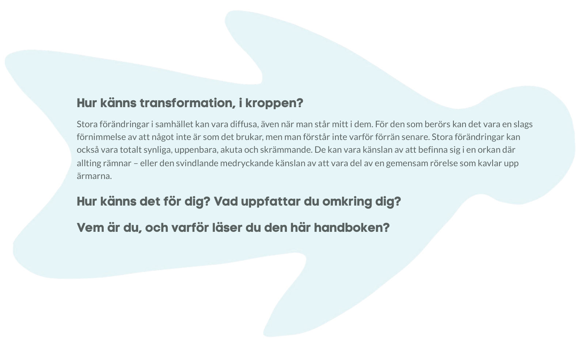
Stora förändringar i samhället kan vara diffusa, även när man står mitt i dem. För den som berörs kan det vara en slags förnimmelse av att något inte är som det brukar, men man förstår inte varför förrän senare. Stora förändringar kan också vara totalt synliga, uppenbara, akuta och skrämmande. De kan vara känslan av att befinna sig i en orkan där allting rämnar – eller den svindlande medryckande känslan av att vara del av en gemensam rörelse som kavlar upp ärmarna.
En inbjudan till handling: Kavla upp ärmarna - du är viktig!
Du behövs!
Vi riktar oss till dig som vill förstå och navigera de djupare förändringar som sker runt omkring oss och verka för förändring.
Vi tror att du är någon som brinner för samhällsutveckling. Kanske är du någon form av pionjär, forskare, entreprenör, förändringsledare eller beslutsfattare som står mitt i den komplexitet som uppstår när världen förändras.
Kanske har du just fått en insikt om att något radikalt måste ske och letar efter nästa steg. Du kanske redan driver eller stöttar transformation eller med din forskning bidrar till att stötta transformation. Det skulle kunna vara så att du är den som vill få nya perspektiv för att hitta nya vägar framåt och sätta ditt arbete i ett större sammanhang. Eller - så har du svårt att få gehör och behöver adressera sånt som blockerar, hitta sätt att övertyga. Det är inte omöjligt att du söker igenkänning eller tröst.
Läs med utgångspunkt i de utmaningar du ser som behöver lösas i samhället eller i de möjligheter du ser skulle kunna förverkligas. Om du befinner dig i en organisation, tänk utifrån de uppgifter i samhället ni är satta att hantera, med den organisation ni har idag. Eller, det uppdrag som du ser att ni borde hantera givet samhällets behov. Och hur organisationen borde se ut då.
Läs boken med ditt fokus, fundera över vad du kan och vill påverka. Boken finns här för att du skall lyckas med ditt viktiga uppdrag. Troligtvis kommer du bredda din syn på vad detta innebär och vad som krävs.
Du är helt central, och oavsett var du står så vill vi på alla sätt hjälpa dig att kavla upp ärmarna och agera!
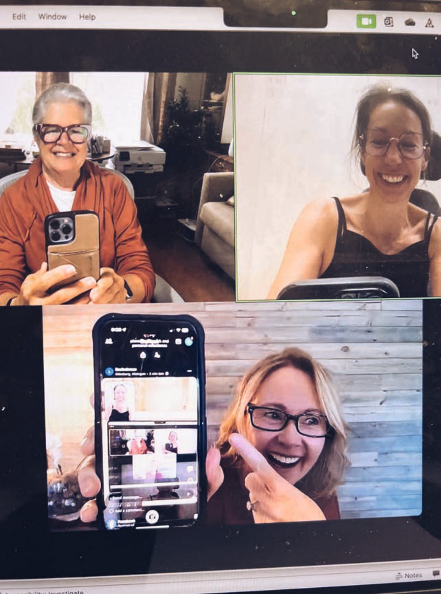
Att det går snabbt kan vi vända till en styrka
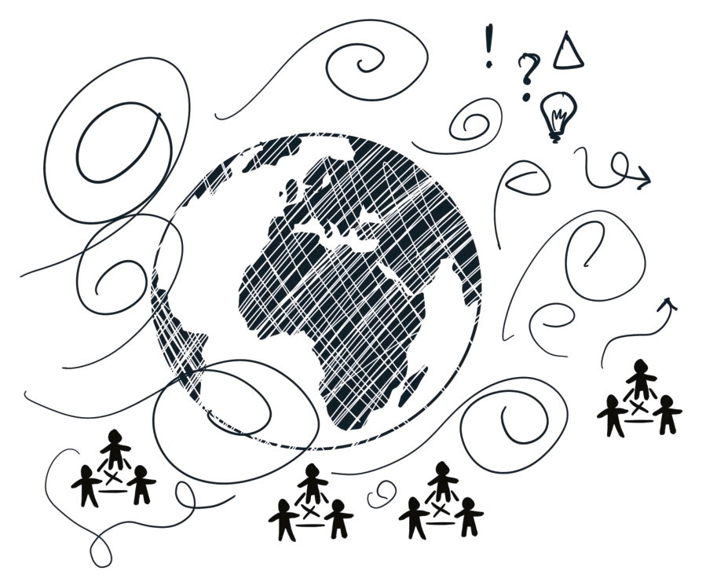
”Never waste the opportunity offered by a good crisis”
Vad gör vi när kasten är så tvära? Idag står vi mitt i radikala och svindlande snabba förändringar som tagit många av oss på sängen och där vi inte har något annat val än att agera. Den accelererande AI-utvecklingen och det hårda uppvaknandet kring ett nytt geopolitiskt säkerhetsläge är exempel på det. Det som kändes självklart igår ställs på ända.
När akuta problem uppstår så trängs mer långsiktiga eller otydliga – men inte mindre viktiga– utmaningar undan. Vad går vi miste om i jakten på snabba lösningar, eller när vi inte förmår adressera problem på rätt systemnivå, och vad får det för konsekvenser?
Det vi vill och behöver utforska är hur vi kan använda kriserna till vår fördel, som ett sätt att accelerera förmågan att ställa om och bygga nya relevanta förmågor.
Transformation sker och behöver hanteras på bredden, på sätt som innefattar såväl människor och relationer som tekniker och strukturer. Vi behöver ta oss an utmaningarna modigt och kreativt, med systemperspektiv och empati, och gå långt utanför vad som är etablerat. Nya aktörer behöver samarbeta på sätt vi inte ens känner till. Vi behöver jobba på flera plan samtidigt.
För detta behöver vi helt återuppfinna hur vi ser, möter och förstår världen.
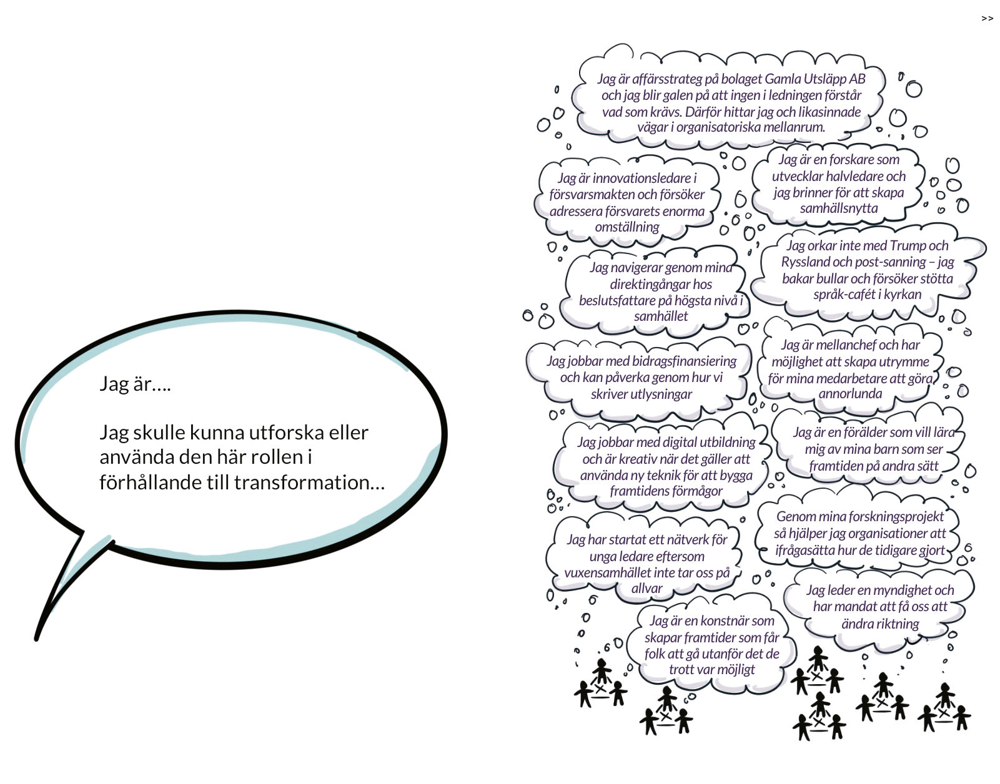
Jag är affärsstrateg på bolaget Gamla Utsläpp AB och jag blir galen på att ingen i ledningen förstår vad som krävs. Därför hittar jag och likasinnade vägar i organisatoriska mellanrum.
Jag är innovationsledare i försvarsmakten och försöker adressera försvarets enorma omställning
Jag orkar inte med Trump och Ryssland och post-sanning – jag bakar bullar och försöker stötta språk-cafét i kyrkan
Jag är mellanchef och har möjlighet att skapa utrymme för mina medarbetare att göra annorlunda
Jag jobbar med digital utbildning och är kreativ när det gäller att använda ny teknik för att bygga framtidens förmågor
Genom mina forskningsprojekt så hjälper jag organisationer att ifrågasätta hur de tidigare gjort
Jag är en konstnär som skapar framtider som får folk att gå utanför det de trott var möjligt
Ibland sticker en rad i en dikt, en anteckning på en anslagstavla eller en bild ut som om den vore i neonfärg, och man kan inte förstå varför man inte såg den tidigare.
Reflektera: En ambition med denna handbok är att skapa sådana neon-ögonblick som får dig att börja se saker på nya sätt, dra nya slutsatser, se nya samband. Kanske kommer du att omvärdera tidigare erfarenheter och kanske kommer du att se nyanser och möjligheter i din kontext på ett sätt som du inte gjort tidigare.
Testa: Vi vill också att du ska bli smittad av förändringsviruset. Inte så att det kliar, men vi hoppas att du ska hitta ny mening och motivation som landar i handling. Svara på frågor, testa våra tips, kavla upp ärmarna där du står.
Interagera: Handboken är också kopplad till en podcast med inbjudna praktiker och forskare, och en studiecirkelserie, så förhoppningsvis kommer du att hitta engagemang i nya möten.
Känn dig trygg och stolt: Vi vill förmedla en känsla av omtanke och uppmuntra till tålamod; oavsett hur radikal förändring som behövs så kan vi inte förvänta oss att våra bidrag är dramatiska. Vissa saker tar tid. Ibland krävs många små steg. Ibland är cirkeln inom vilken du agerar och kan påverka stor, ibland påverkar det du kan göra bara dem som står dig närmast. Det är också ok, och det kan till och med vara den mest kraftfulla vägen mot positiv förändring. Det du gör kan också ha en mycket större inverkan än vad du tror!
Vad vi hoppas handboken hjälper dig
med
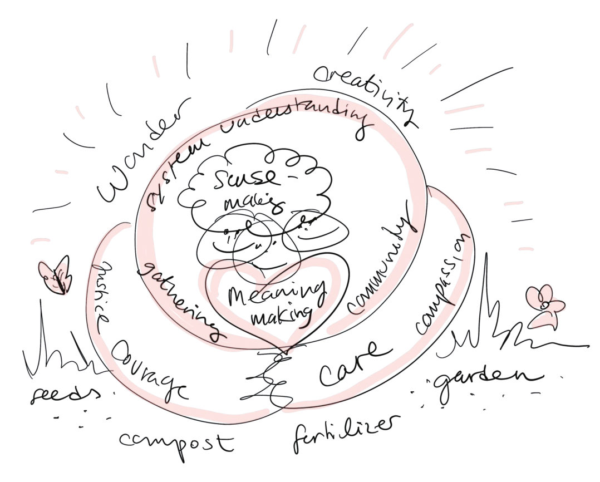
Nyckeldefinitioner, grekiska ord och en teaser om design
Det finns ord och uttryck som man ofta hör i kontexten systemisk transformation, så vi börjar med definitioner av de vanligaste. Vi tar också upp några principer dessa bygger på och som vi återkommer till när vi vill förklara varför något är viktigt eller svårt.
Faktum är att handboken föddes ur ett behov av ett gemensamt språk för att stötta kunskapsutbyte (och kunskapsbyggande) oss kollegor emellan.
Trots att vi författare började träffas genom vårt intresse för systemisk transformation så upplevde vi att vi ofta talade förbi varandra – och att fler än vi förmodligen hade liknande utmaningar och behov. Till exempel kunde vi på grund av våra olika ”språk”, ha svårt att se kopplingar mellan projekt och exempel som egentligen hade allt med varandra att göra.
Vi behöver också aktivt skapa nya ord, begrepp, tankefigurer, modeller och berättelser om det nya som håller på att växa fram, och som vi inte redan har ett språk för sen tidigare. Det vi inte kan uttrycka och förhålla oss till blir ännu svårare att förstå.
Så låt dig inte skrämmas (eller skämmas) om det finns ord som du känner att du borde ha känt till. Vi försöker ta upp dem här, och om det fortfarande känns ovant så beror det inte på dig, utan på oss.
Behov av ett gemensamt språk
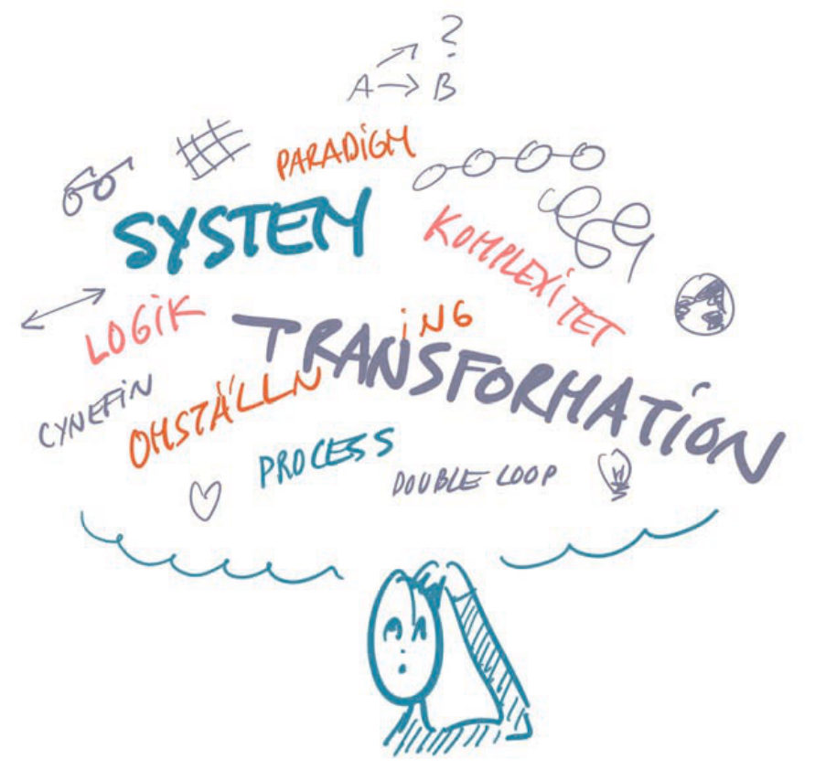
Viktiga definitioner
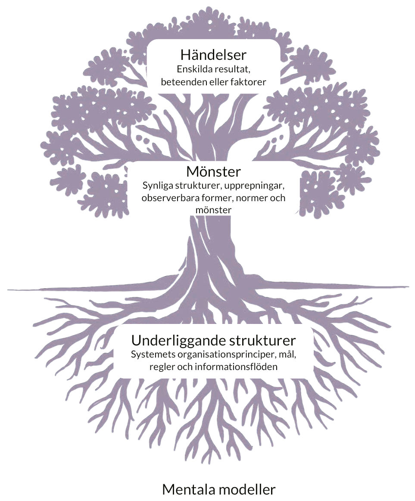
Underliggande strukturer Systemets organisationsprinciper, mål, regler och informationsflöden
Mentala modeller Värderingar, mindset, antaganden, perspektiv och världsbild som strukturen växer fram ur
System
Flera delar som är ömsesidigt sammankopplade, beroende av, och med påverkan på varandra. Delar som arbetar tillsammans för att uppnå ett gemensamt mål, exempelvis ett ekosystem, en levande organism eller organisationer. Systemet är större än summan av dess delar, snarare består det av interaktionerna mellan dessa.
Transformation vs. Transition (omställning)
Både transition och transformation innebär genomgripande förändringar som kan omfatta alla systemnivåer. Skillnaden ligger i deras natur. Transition är en stegvis övergång från ett känt tillstånd till ett annat, med tydliga mål och definierade steg. Transformation däremot innebär en förändring från något känt till något okänt, där både mål och riktning är osäkra och förändringen sker i en komplex och dynamisk kontext.
Systemisk transformation
En djupgående förändring som omformar ett systems strukturer, processer och logik genom ömsesidig påverkan mellan helheten och dess delar. Förändringen är icke-linjär och skapar ett nytt tillstånd där både mål och väg framåt är osäkra. Systemisk transformation innebär att den omfattar hela systemets komplexitet och uppstår genom samspelet mellan många sammanlänkade delsystem på olika nivåer.
Resiliens
Ett systems förmåga att motstå, anpassa sig till och återhämta sig från förändringar, störningar eller påfrestningar utan att förlora sin funktion eller identitet. Resiliens handlar inte bara om att återgå till ett tidigare tillstånd, utan också om att utvecklas och förändras genom anpassning och transformation, och bli till något nytt. Resiliensen bygger på samspelet mellan stabilitet och förändring, där återkoppling, diversitet och lärande spelar en central roll i systemets långsiktiga hållbarhet.
Begrepp som hjälper oss förstå
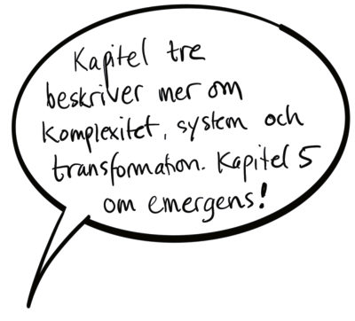
Modernitetens linjära synsätt
Tankesätt som dominerar (den västerländska) världsbilden idag och sedan de sista 150 åren. Det är inspirerat av upplysningsfilosofin och natur-vetenskapen, där samband mellan orsak och verkan antas vara tydliga och repeterbara, där parametrar går att isolera och problem går att analysera genom att delas upp i mindre delar. Detta
Reduktionism
Också ett grundläggande tankesätt inom västerländsk vetenskap och filosofi, som bygger på antagandet att helheten kan förstås genom att delas upp i sina beståndsdelar. Genom att isolera variabler och studera dem var för sig försöker vi förklara, förutsäga och kontrollera. Reduktionismen har möjliggjort stora framsteg inom teknik, och medicin – men synsätt utgör grunden för ett samhälle som bygger på idéer om mätbarhet och tenderar att förbise relationer, sammanhang och systemdynamik. Synsättet leder ofta till förenklade lösningar på komplexa problem, där det som inte är mätbart ofta betraktas som oväsentligt.
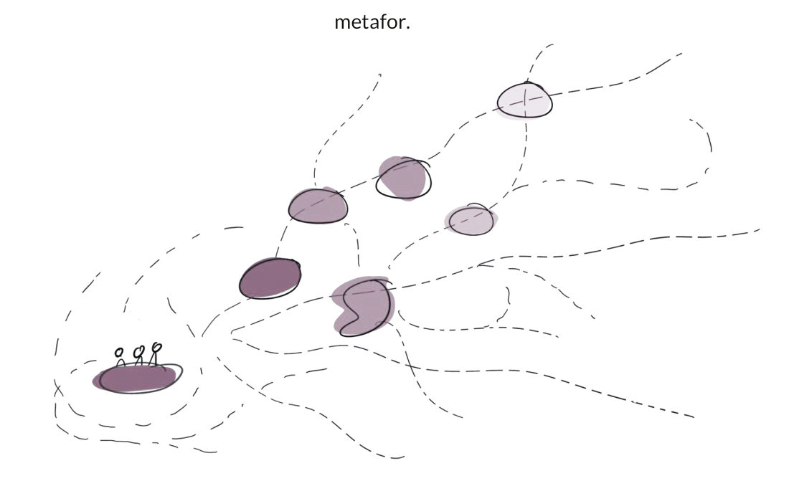
Emergens
En framväxande process där nya mönster, strukturer eller egenskaper växer fram genom samspelet mellan ett systems delar och helhet, utan att vara direkt styrda eller planerade. Emergenta fenomen uppstår ur relationer, återkoppling och dynamisk anpassning inom systemet. De förändras och utvecklas över tid genom interaktioner, där små variationer kan ge upphov till genomgripande systemförändringar. Det går inte att förstå emergens genom reduktionism eller determinism, då fenomenet inte går att spåra till en enskild grundorsak.
Komplexitet
Ett tillstånd där många samman-länkade delar samverkar på ett sätt som skapar ickelinjära och oförutsägbara mönster. Orsak och verkan är ofta svåra att överblicka, och små förändringar kan få stora system-effekter. Typexempel är biologiska ekosystem, men också samhällen och sociala system. Att hantera komplexitet handlar därför mindre om att kontrollera och styra, och mer om att förstå, navigera och anpassa i ett system av relationer och ömsesidig påverkan. Ofta fungerar berättelser och metaforer bättre än försök till tydlighet och kontroll.
Wicked Problems
Komplexa problem utan enkla lösningar, där orsak och verkan är svåra att urskilja och varje åtgärd förändrar problemet. De kräver både insikter om alla som påverkas och ett systemiskt perspektiv som ser hur olika nivåer samspelar. Framgång handlar inte om kontroll, utan om att navigera komplexiteten och hitta hävstångspunkter för verklig förändring.
Fler ord som ofta känns ovana
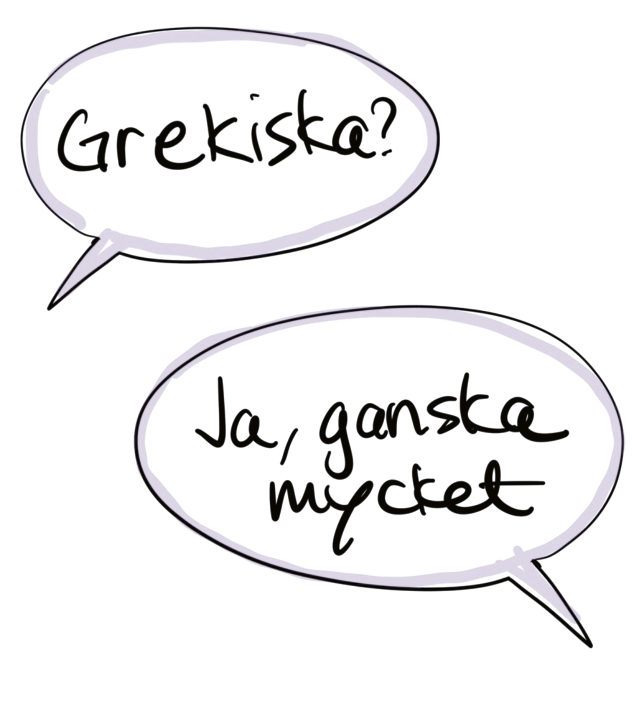
Systemlogik De underliggande principer, samband och dynamiker som formar ett systems beteende, vad som uppfattas som möjligt, effektfullt och rationellt inom dess ramar, samt hur inblandade aktörer agerar. Systemlogiken är emergent och kontextbunden och förändras när strukturer, relationer eller yttre förutsättningar skiftar, vilket kan omforma hela systemets funktion och riktning. Till exempel idén om universella mänskliga
rättigheter, eller logiken bakom NPM – new public management.
Paradigm Ett ramverk av grundläggande antaganden, perspektiv och samband som formar hur vi uppfattar, tolkar och organiserar världen. Till exempel liberal demokrati, kapitalism.
Paradigm avgör vad som ses som relevant kunskap och vilka lösningar som är tänkbara inom en given kontext. De är inte statiska – när befintliga sätt att förstå verkligheten blir otillräckliga, kan ett paradigmskifte uppstå där en ny logik omformar hur vi ser och agerar i världen.
Adaptiv Förmågan att anpassa sig efter nya förutsättningar. Komplexa adaptiva system är system som anpassar sig och utvecklas över tid som svar på förändringar i omgivningen – vilket i sig ger upphov till ny komplexitet.
Praktik En (de facto) etablerad form för hur man gör något, i en viss social och domänkontext. Ofta kopplad till tyst kunskap, erfarenhet, och något som växt fram under en längre tid i ett visst socialt och domän-kopplat sammanhang. Jämför med t ex ”communities of practice” och fack-kunskap inom ett visst område. Till exempel snickares och hantverkares
etablerade sätt att bygga hus.
Institutioner Stabila normer, strukturer och regler som formar samhällets funktion, såsom vården, kyrkan och skolsystemet. Institutioner är inte enbart formella, som myndigheter, utan även kan även bestå av informella praktiker och system som har institutional-iserats genom förväntningar och etablerade beteendemönster. Institutioner utvecklas i samspel med samhället och kan förändras när normer, maktförhållanden eller yttre förutsättningar skiftar.
Intermediär Något som befinner sig mellan två tillstånd: exempelvis olika tidpunkter, nivåer, aktörer, men också organisatoriskt och begreppsligt. En intermediär lösning är lämplig i stunden och under vissa förutsättningar, men ersätts sedan av något annat.
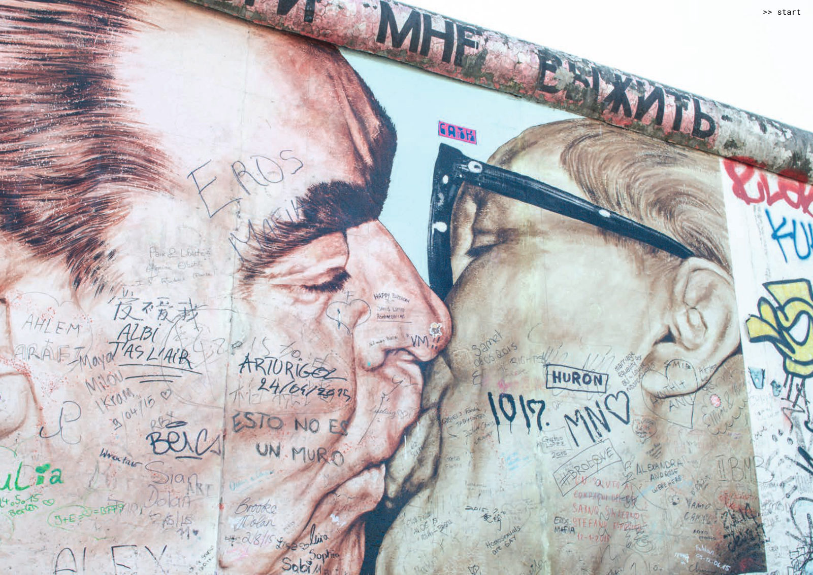
Berlinmuren, West Side Gallery
Hur omfattande transformation talar vi om i boken?
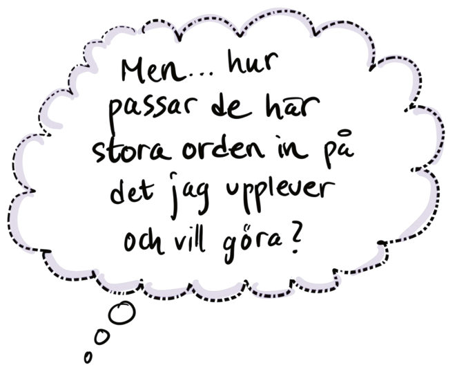
Vi är intresserade av systemisk förändring som tar hänsyn till systemens hela komplexitet - som innefattar strukturer, beteenden, tankesätt, hur vi organiserar – och hur allt det här interagerar. Ju mer komplex fråga, desto mer blir de här nivåerna intrasslade och fler aktörer blir inblandade.
Ibland handlar transformation om det lokala, det som ligger nära, om det lilla just där man står - som man kanske inte alls upplever som en del av hela det här komplexa systemet. Trots detta så kan man genom att se på sin fråga ur ett systemperspektiv, inse att den är en del av hela den komplexa väven.
Vi människor vet inte hur radikal utveckling våra olika ansträngningar så småningom kommer att landa i, men där det finns mycket komplexitet och osäkerhet, där behöver vi också börja göra och tänka helt annorlunda. Med det sagt:
- Förändring kan ske med olika magnitud, med olika hastighet, i stora kliv eller många pyttesmå steg. Det som är omvälvande på ett ställe behöver inte kännas så i andra sammanhang.
- Den omgivning du agerar i och har möjlighet att påverka, kan handla om mindre eller större cirklar – och det du gör kommer i sin tur påverka andra cirklar genom ringar på vattnet som rör sig i olika hastighet. Emergenta fenomen som interferens och resonans kan uppstå, som förvränger eller förstärker effekten.
- Förändring kan ske i flera lager samtidigt, och beroende på perspektiv så kan något framstå som antingen futtigt eller enormt. Förmodligen kommer man i efterhand att se att helt andra saker påverkade, än det man trodde när man stod mitt uppe i det.
- Ofta ligger nyckeln till de största, mest komplexa frågorna i hur vi tänker och handlar i vardagen – vilka perspektiv, tankefigurer och ramar vi använder för att förhålla oss till världen.
Design och konstnärliga perspektiv som återkommande teman
Utan att ha gått in på några detaljer så har vi redan nu – genom ordlistan - antytt att linjära och reduktionistiska tankesätt inte passar när verkligheten är alltmer komplex och föränderlig. När den är präglad av ”wicked problems” och systeminteraktioner som inte går att greppa. Så hur kan man tänka och göra annorlunda?
Vi vill redan nu lyfta design och konst som inspiration till hur du kan närma dig transformation, vilket styrks av forskning och går som en röd tråd genom våra sätt att göra.
Det innebär inte att de som inte har kunskap om eller är ointresserade av design inte skulle kunna jobba med transformation – men att det finns ett spännande befintligt fält att lära från, och som är långt ifrån flummigt.
“Konsten erbjuder språk, arbetssätt och förhållningssätt till det komplexa, suddiga och motsägelsefulla – precis det som ofta
saknas i organisationssystemen. Genom konsten kommer vi åt vår mänskliga kreativitet, vår nyfikenhet, våra frågor. Inte för att det är
effektivt, utan för att det är meningsfullt”.
Vad menar vi med design och varför passar det in i sammanhanget systemisk transformation?
- Design och konst hjälper oss att förflytta oss in i det nya: det handlar om arbetssätt och förhållningssätt som passar de utmaningar vi står inför kopplat till komplexitet och osäkerhet.
- Design, som kortfattat kan beskrivas som framväxande, experimenterande angreppssätt, kritiskt ifrågasättande och fokus på människor i system, passar därför utmärkt.
- Design är också en representation av det som kan vara det nya: de humanistiska, hållbara, systemorienterande tankemodeller som ligger till grund för design är i sig själva en del av det vi vill luta oss mot i det nya.
Design och konst i boken:
- I kapitel 5 ger vi fördjupning och förklaringar kring design när vi talar om framväxande processer, prototypande och systemförståelse. (s. 117)
- Hela kapitel 6 är egentligen en beskrivning av designmetodik i praktiken, även om rubrikerna inte heter något med design. (s. 159)
- I kapitel 7 nämner vi Schibbolet-metoden som bjuder in konst i ledarskapsutbildning, (s. 223)
- I kapitel 8 ger vi flera exempel på hur vi på Prototypande Samhälle på RISE jobbar med eller lyfter fram design, konst och kultur, till exempel genom framtidsprototyper. Vi beskriver också (kort) design thinking, designfacilitering och systemisk design. (s. 227)